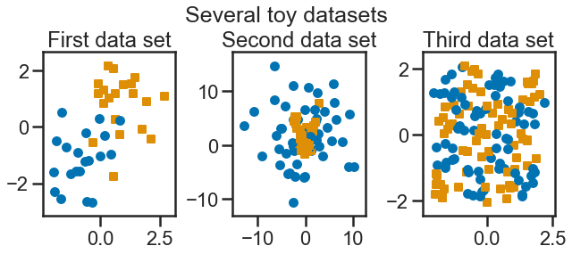
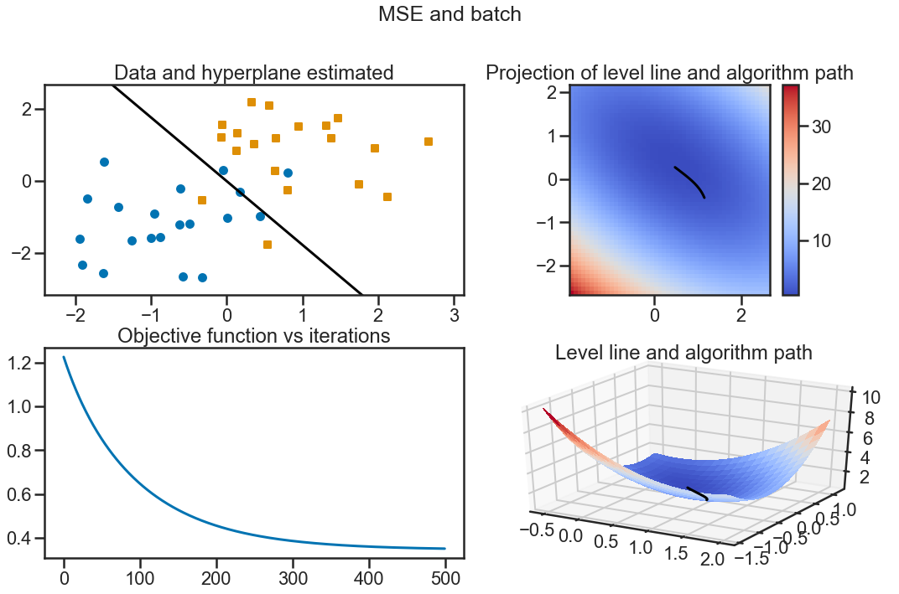
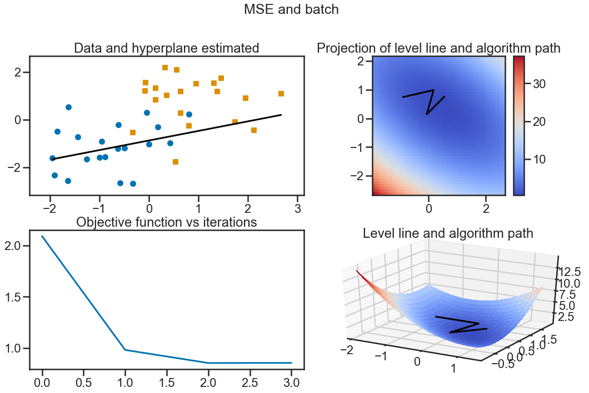
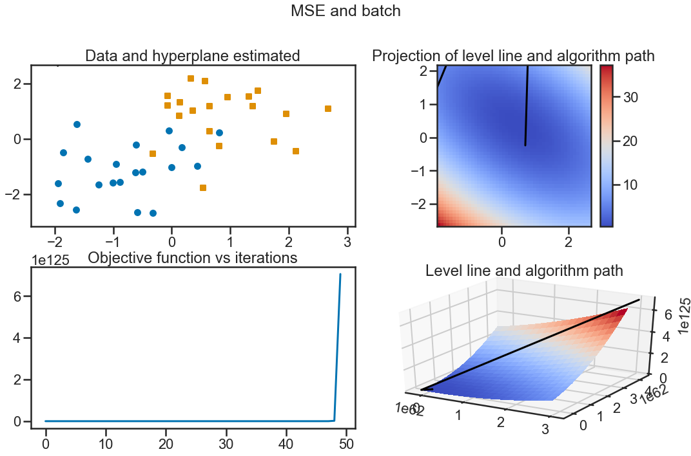
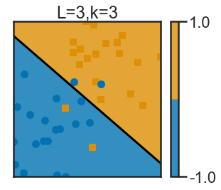
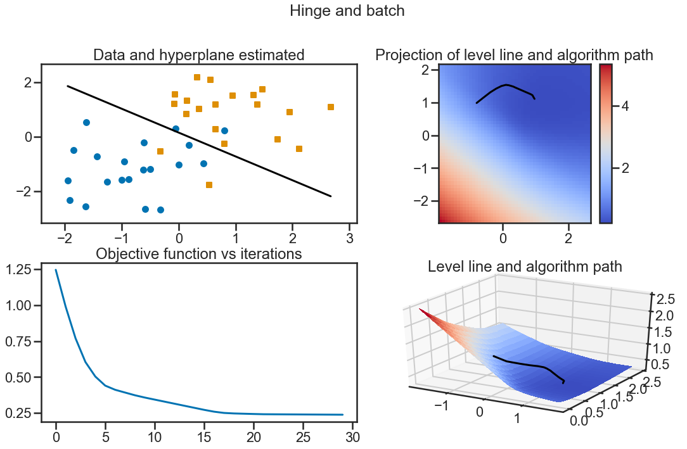
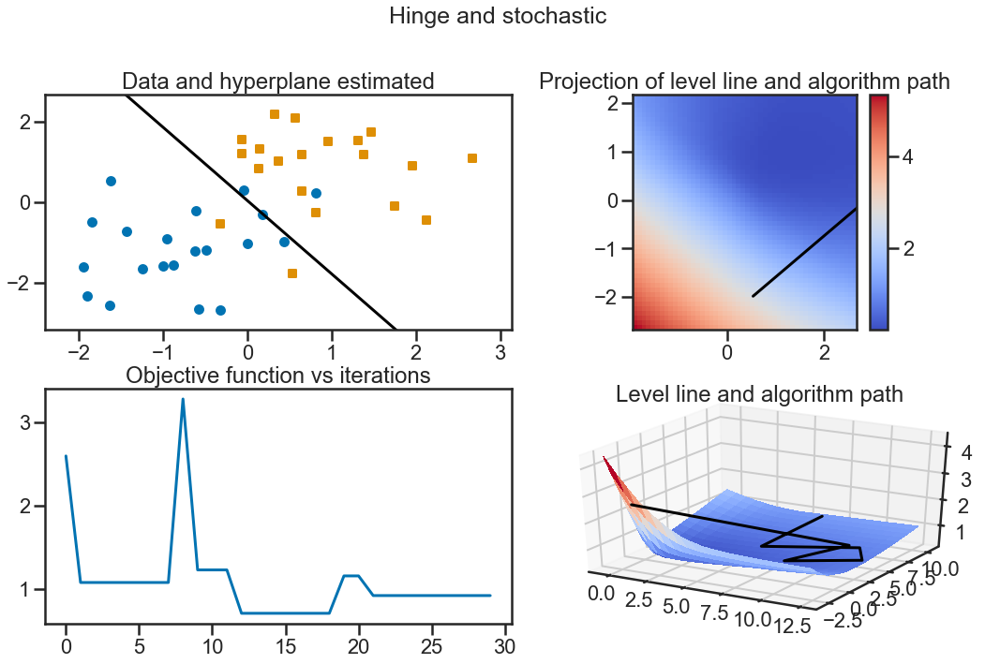
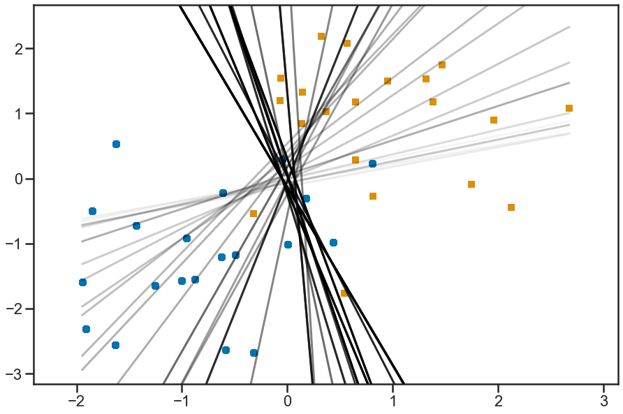

import numpy as np
import matplotlib.pyplot as plt
from tp_perceptron_source import (rand_gauss, rand_bi_gauss, rand_checkers,
rand_clown, plot_2d, gradient,
plot_gradient, frontiere_new,
hinge_loss, gr_hinge_loss,
mse_loss, gr_mse_loss)
import seaborn as sns
from matplotlib import rc
from sklearn import linear_model
from sklearn.pipeline import Pipeline
from sklearn.preprocessing import PolynomialFeaturesTP Perceptron - HMMA308:
Joseph Salmon
plt.close('all')
rc('font', **{'family': 'sans-serif', 'sans-serif': ['Computer Modern Roman']})
params = {'text.usetex': False,
'figure.titlesize': 25,
}
plt.rcParams.update(params)
# sns.set_context("poster")
sns.set_palette("colorblind")
sns.set_style("ticks")
sns.axes_style()
# seed initialization
np.random.seed(seed=44)
# for saving files
saving_activated = True # Falseplt.rcParams.keys() # to get all attribute you can pre-specify in matplotlib./home/jo/anaconda3/lib/python3.7/_collections_abc.py:705: MatplotlibDeprecationWarning:
The examples.directory rcparam was deprecated in Matplotlib 3.0 and will be removed in 3.2. In the future, examples will be found relative to the 'datapath' directory.
return '{0.__class__.__name__}({0._mapping!r})'.format(self)KeysView(RcParams({'_internal.classic_mode': False,
'agg.path.chunksize': 0,
'animation.avconv_args': [],
'animation.avconv_path': 'avconv',
'animation.bitrate': -1,
'animation.codec': 'h264',
'animation.convert_args': [],
'animation.convert_path': 'convert',
'animation.embed_limit': 20.0,
'animation.ffmpeg_args': [],
'animation.ffmpeg_path': 'ffmpeg',
'animation.frame_format': 'png',
'animation.html': 'none',
'animation.html_args': [],
'animation.writer': 'ffmpeg',
'axes.autolimit_mode': 'data',
'axes.axisbelow': True,
'axes.edgecolor': '.15',
'axes.facecolor': 'white',
'axes.formatter.limits': [-7, 7],
'axes.formatter.min_exponent': 0,
'axes.formatter.offset_threshold': 4,
'axes.formatter.use_locale': False,
'axes.formatter.use_mathtext': False,
'axes.formatter.useoffset': True,
'axes.grid': False,
'axes.grid.axis': 'both',
'axes.grid.which': 'major',
'axes.labelcolor': '.15',
'axes.labelpad': 4.0,
'axes.labelsize': 24.0,
'axes.labelweight': 'normal',
'axes.linewidth': 2.5,
'axes.prop_cycle': cycler('color', [(0.00392156862745098, 0.45098039215686275, 0.6980392156862745), (0.8705882352941177, 0.5607843137254902, 0.0196078431372549), (0.00784313725490196, 0.6196078431372549, 0.45098039215686275), (0.8352941176470589, 0.3686274509803922, 0.0), (0.8, 0.47058823529411764, 0.7372549019607844), (0.792156862745098, 0.5686274509803921, 0.3803921568627451), (0.984313725490196, 0.6862745098039216, 0.8941176470588236), (0.5803921568627451, 0.5803921568627451, 0.5803921568627451), (0.9254901960784314, 0.8823529411764706, 0.2), (0.33725490196078434, 0.7058823529411765, 0.9137254901960784)]),
'axes.spines.bottom': True,
'axes.spines.left': True,
'axes.spines.right': True,
'axes.spines.top': True,
'axes.titlepad': 6.0,
'axes.titlesize': 24.0,
'axes.titleweight': 'normal',
'axes.unicode_minus': True,
'axes.xmargin': 0.05,
'axes.ymargin': 0.05,
'axes3d.grid': True,
'backend': 'module://ipykernel.pylab.backend_inline',
'backend_fallback': True,
'boxplot.bootstrap': None,
'boxplot.boxprops.color': 'black',
'boxplot.boxprops.linestyle': '-',
'boxplot.boxprops.linewidth': 1.0,
'boxplot.capprops.color': 'black',
'boxplot.capprops.linestyle': '-',
'boxplot.capprops.linewidth': 1.0,
'boxplot.flierprops.color': 'black',
'boxplot.flierprops.linestyle': 'none',
'boxplot.flierprops.linewidth': 1.0,
'boxplot.flierprops.marker': 'o',
'boxplot.flierprops.markeredgecolor': 'black',
'boxplot.flierprops.markeredgewidth': 1.0,
'boxplot.flierprops.markerfacecolor': 'none',
'boxplot.flierprops.markersize': 6.0,
'boxplot.meanline': False,
'boxplot.meanprops.color': 'C2',
'boxplot.meanprops.linestyle': '--',
'boxplot.meanprops.linewidth': 1.0,
'boxplot.meanprops.marker': '^',
'boxplot.meanprops.markeredgecolor': 'C2',
'boxplot.meanprops.markerfacecolor': 'C2',
'boxplot.meanprops.markersize': 6.0,
'boxplot.medianprops.color': 'C1',
'boxplot.medianprops.linestyle': '-',
'boxplot.medianprops.linewidth': 1.0,
'boxplot.notch': False,
'boxplot.patchartist': False,
'boxplot.showbox': True,
'boxplot.showcaps': True,
'boxplot.showfliers': True,
'boxplot.showmeans': False,
'boxplot.vertical': True,
'boxplot.whiskerprops.color': 'black',
'boxplot.whiskerprops.linestyle': '-',
'boxplot.whiskerprops.linewidth': 1.0,
'boxplot.whiskers': 1.5,
'contour.corner_mask': True,
'contour.negative_linestyle': 'dashed',
'datapath': '/home/jo/anaconda3/lib/python3.7/site-packages/matplotlib/mpl-data',
'date.autoformatter.day': '%Y-%m-%d',
'date.autoformatter.hour': '%m-%d %H',
'date.autoformatter.microsecond': '%M:%S.%f',
'date.autoformatter.minute': '%d %H:%M',
'date.autoformatter.month': '%Y-%m',
'date.autoformatter.second': '%H:%M:%S',
'date.autoformatter.year': '%Y',
'docstring.hardcopy': False,
'errorbar.capsize': 0.0,
'examples.directory': '',
'figure.autolayout': False,
'figure.constrained_layout.h_pad': 0.04167,
'figure.constrained_layout.hspace': 0.02,
'figure.constrained_layout.use': False,
'figure.constrained_layout.w_pad': 0.04167,
'figure.constrained_layout.wspace': 0.02,
'figure.dpi': 72.0,
'figure.edgecolor': (1, 1, 1, 0),
'figure.facecolor': 'white',
'figure.figsize': [6.0, 4.0],
'figure.frameon': True,
'figure.max_open_warning': 20,
'figure.subplot.bottom': 0.125,
'figure.subplot.hspace': 0.2,
'figure.subplot.left': 0.125,
'figure.subplot.right': 0.9,
'figure.subplot.top': 0.88,
'figure.subplot.wspace': 0.2,
'figure.titlesize': 25.0,
'figure.titleweight': 'normal',
'font.cursive': ['Apple Chancery',
'Textile',
'Zapf Chancery',
'Sand',
'Script MT',
'Felipa',
'cursive'],
'font.family': ['sans-serif'],
'font.fantasy': ['Comic Sans MS',
'Chicago',
'Charcoal',
'Impact',
'Western',
'Humor Sans',
'xkcd',
'fantasy'],
'font.monospace': ['DejaVu Sans Mono',
'Bitstream Vera Sans Mono',
'Computer Modern Typewriter',
'Andale Mono',
'Nimbus Mono L',
'Courier New',
'Courier',
'Fixed',
'Terminal',
'monospace'],
'font.sans-serif': ['Arial',
'DejaVu Sans',
'Liberation Sans',
'Bitstream Vera Sans',
'sans-serif'],
'font.serif': ['DejaVu Serif',
'Bitstream Vera Serif',
'Computer Modern Roman',
'New Century Schoolbook',
'Century Schoolbook L',
'Utopia',
'ITC Bookman',
'Bookman',
'Nimbus Roman No9 L',
'Times New Roman',
'Times',
'Palatino',
'Charter',
'serif'],
'font.size': 10.0,
'font.stretch': 'normal',
'font.style': 'normal',
'font.variant': 'normal',
'font.weight': 'normal',
'grid.alpha': 1.0,
'grid.color': '.8',
'grid.linestyle': '-',
'grid.linewidth': 2.0,
'hatch.color': 'black',
'hatch.linewidth': 1.0,
'hist.bins': 10,
'image.aspect': 'equal',
'image.cmap': 'rocket',
'image.composite_image': True,
'image.interpolation': 'nearest',
'image.lut': 256,
'image.origin': 'upper',
'image.resample': True,
'interactive': True,
'keymap.all_axes': ['a'],
'keymap.back': ['left', 'c', 'backspace', 'MouseButton.BACK'],
'keymap.copy': ['ctrl+c', 'cmd+c'],
'keymap.forward': ['right', 'v', 'MouseButton.FORWARD'],
'keymap.fullscreen': ['f', 'ctrl+f'],
'keymap.grid': ['g'],
'keymap.grid_minor': ['G'],
'keymap.help': ['f1'],
'keymap.home': ['h', 'r', 'home'],
'keymap.pan': ['p'],
'keymap.quit': ['ctrl+w', 'cmd+w', 'q'],
'keymap.quit_all': ['W', 'cmd+W', 'Q'],
'keymap.save': ['s', 'ctrl+s'],
'keymap.xscale': ['k', 'L'],
'keymap.yscale': ['l'],
'keymap.zoom': ['o'],
'legend.borderaxespad': 0.5,
'legend.borderpad': 0.4,
'legend.columnspacing': 2.0,
'legend.edgecolor': '0.8',
'legend.facecolor': 'inherit',
'legend.fancybox': True,
'legend.fontsize': 22.0,
'legend.framealpha': 0.8,
'legend.frameon': True,
'legend.handleheight': 0.7,
'legend.handlelength': 2.0,
'legend.handletextpad': 0.8,
'legend.labelspacing': 0.5,
'legend.loc': 'best',
'legend.markerscale': 1.0,
'legend.numpoints': 1,
'legend.scatterpoints': 1,
'legend.shadow': False,
'legend.title_fontsize': None,
'lines.antialiased': True,
'lines.color': 'C0',
'lines.dash_capstyle': 'butt',
'lines.dash_joinstyle': 'round',
'lines.dashdot_pattern': [6.4, 1.6, 1.0, 1.6],
'lines.dashed_pattern': [3.7, 1.6],
'lines.dotted_pattern': [1.0, 1.65],
'lines.linestyle': '-',
'lines.linewidth': 3.0,
'lines.marker': 'None',
'lines.markeredgecolor': 'auto',
'lines.markeredgewidth': 1.0,
'lines.markerfacecolor': 'auto',
'lines.markersize': 12.0,
'lines.scale_dashes': True,
'lines.solid_capstyle': 'round',
'lines.solid_joinstyle': 'round',
'markers.fillstyle': 'full',
'mathtext.bf': 'sans:bold',
'mathtext.cal': 'cursive',
'mathtext.default': 'it',
'mathtext.fallback_to_cm': True,
'mathtext.fontset': 'dejavusans',
'mathtext.it': 'sans:italic',
'mathtext.rm': 'sans',
'mathtext.sf': 'sans',
'mathtext.tt': 'monospace',
'patch.antialiased': True,
'patch.edgecolor': 'w',
'patch.facecolor': (0.00392156862745098,
0.45098039215686275,
0.6980392156862745),
'patch.force_edgecolor': True,
'patch.linewidth': 2.0,
'path.effects': [],
'path.simplify': True,
'path.simplify_threshold': 0.1111111111111111,
'path.sketch': None,
'path.snap': True,
'pdf.compression': 6,
'pdf.fonttype': 3,
'pdf.inheritcolor': False,
'pdf.use14corefonts': False,
'pgf.preamble': '',
'pgf.rcfonts': True,
'pgf.texsystem': 'xelatex',
'polaraxes.grid': True,
'ps.distiller.res': 6000,
'ps.fonttype': 3,
'ps.papersize': 'letter',
'ps.useafm': False,
'ps.usedistiller': False,
'savefig.bbox': None,
'savefig.directory': '~',
'savefig.dpi': 'figure',
'savefig.edgecolor': 'white',
'savefig.facecolor': 'white',
'savefig.format': 'png',
'savefig.frameon': True,
'savefig.jpeg_quality': 95,
'savefig.orientation': 'portrait',
'savefig.pad_inches': 0.1,
'savefig.transparent': False,
'scatter.edgecolors': 'face',
'scatter.marker': 'o',
'svg.fonttype': 'path',
'svg.hashsalt': None,
'svg.image_inline': True,
'text.antialiased': True,
'text.color': '.15',
'text.hinting': 'auto',
'text.hinting_factor': 8,
'text.latex.preamble': '',
'text.latex.preview': False,
'text.latex.unicode': True,
'text.usetex': False,
'timezone': 'UTC',
'tk.window_focus': False,
'toolbar': 'toolbar2',
'verbose.fileo': 'sys.stdout',
'verbose.level': 'silent',
'webagg.address': '127.0.0.1',
'webagg.open_in_browser': True,
'webagg.port': 8988,
'webagg.port_retries': 50,
'xtick.alignment': 'center',
'xtick.bottom': True,
'xtick.color': '.15',
'xtick.direction': 'out',
'xtick.labelbottom': True,
'xtick.labelsize': 22.0,
'xtick.labeltop': False,
'xtick.major.bottom': True,
'xtick.major.pad': 3.5,
'xtick.major.size': 12.0,
'xtick.major.top': True,
'xtick.major.width': 2.5,
'xtick.minor.bottom': True,
'xtick.minor.pad': 3.4,
'xtick.minor.size': 8.0,
'xtick.minor.top': True,
'xtick.minor.visible': False,
'xtick.minor.width': 2.0,
'xtick.top': False,
'ytick.alignment': 'center_baseline',
'ytick.color': '.15',
'ytick.direction': 'out',
'ytick.labelleft': True,
'ytick.labelright': False,
'ytick.labelsize': 22.0,
'ytick.left': True,
'ytick.major.left': True,
'ytick.major.pad': 3.5,
'ytick.major.right': True,
'ytick.major.size': 12.0,
'ytick.major.width': 2.5,
'ytick.minor.left': True,
'ytick.minor.pad': 3.4,
'ytick.minor.right': True,
'ytick.minor.size': 8.0,
'ytick.minor.visible': False,
'ytick.minor.width': 2.0,
'ytick.right': False}))# Scaling adpated to %matplotlib inline, not %matplotlib notebook
%matplotlib inline# Changer ici par votre Prenom Nom:
prenom = "Joseph" # à remplacer
nom = "Salmon" # à remplacer
extension = ".ipynb"
tp = "TP1_HMMA308"filename = "_".join([tp, prenom, nom]) + extension
print(filename)TP1_HMMA308_Joseph_Salmon.ipynbfilename = filename.lower()
print(filename)tp1_hmma308_joseph_salmon.ipynb# utiliser filename pour votre nom de TP / renduQuestion 1: data generation
###############################################################################
# Data Generation: example
###############################################################################
n = 100
mu = [1., 1.]
sigmas = [1., 1.]Dataset 1
n1 = 20
n2 = 20
mu1 = [1., 1.]
mu2 = [-1., -1.]
sigmas1 = [0.9, 0.9]
sigmas2 = [0.9, 0.9]
X1, y1 = rand_bi_gauss(n1, n2, mu1, mu2, sigmas1, sigmas2)Dataset 2
n1 = 50
n2 = 50
sigmas1 = 1.
sigmas2 = 5.
X2, y2 = rand_clown(n1, n2, sigmas1, sigmas2)Dataset 3
n1 = 75
n2 = 75
sigma = 0.1
X3, y3 = rand_checkers(n1, n2, sigma)Displaying labeled data
plt.close("all")
plt.figure(1, figsize=(9, 4))
plt.suptitle("Several toy datasets")
plt.subplot(131)
plt.title('First data set')
plot_2d(X1, y1)
plt.subplot(132)
plt.title('Second data set')
plot_2d(X2, y2)
plt.subplot(133)
plt.title('Third data set')
plot_2d(X3, y3)
plt.tight_layout()
plt.subplots_adjust(top = 0.8)
plt.show()
# MSE Loss:
epsilon = 0.0001
niter = 500
w_ini = np.random.randn(X1.shape[1] + 1)
lfun = mse_loss
gr_lfun = gr_mse_loss
# Stochastic Gradient Descent: case with a good stepsize, convergence is clear
plt.figure(3, figsize=(15, 10))
wh, costh = gradient(X1, y1, epsilon, niter, w_ini, lfun, gr_lfun,
stochastic=False)
plot_gradient(X1, y1, wh, costh, lfun)
plt.suptitle('MSE and batch')
plt.tight_layout()
plt.subplots_adjust(top=0.85)
plt.show()
# Stochastic Gradient Descent: case with a larger stepsize,
# oscilations due to too large stepsizes can be often seen.
epsilon = 0.01
niter = 4
w_ini = np.random.randn(X1.shape[1] + 1)
lfun = mse_loss
gr_lfun = gr_mse_loss
# Stochastic Gradient Descent: case with a good stepsize, convergence is clear
plt.figure(3, figsize=(15, 10))
wh, costh = gradient(X1, y1, epsilon, niter, w_ini, lfun, gr_lfun,
stochastic=False)
plot_gradient(X1, y1, wh, costh, lfun)
plt.suptitle('MSE and batch')
plt.tight_layout()
plt.subplots_adjust(top=0.85)
plt.show()
# Stochastic Gradient Descent: case with a very larger stepsize, divergence
epsilon = 0.1
niter = 50
w_ini = np.random.randn(X1.shape[1] + 1)
lfun = mse_loss
gr_lfun = gr_mse_loss
# Stochastic Gradient Descent: case with a good stepsize, convergence is clear
plt.figure(4, figsize=(15, 10))
wh, costh = gradient(X1, y1, epsilon, niter, w_ini, lfun, gr_lfun,
stochastic=False)
plot_gradient(X1, y1, wh, costh, lfun)
plt.suptitle('MSE and batch')
plt.tight_layout()
plt.subplots_adjust(top=0.85)
plt.show()
# Sklearn SGD:
clf = linear_model.SGDClassifier()
clf.fit(X1, y1)
plt.figure(88)
ax = plt.gca()
wsgd = [clf.intercept_[0], clf.coef_[0, 0], clf.coef_[0, 1]]
frontiere_new(clf, X1, y1, ax, wsgd, step=200, alpha_choice=1)
plt.show()
# Hinge Loss case:
epsilon = 0.01
niter = 30
std_ini = 1.
w_ini = std_ini * np.random.randn(X1.shape[1] + 1)
lfun = hinge_loss
gr_lfun = gr_hinge_loss
wh, costh = gradient(X1, y1, epsilon, niter, w_ini, lfun,
gr_lfun, stochastic=False)
plt.figure(6, figsize=(15, 10))
plot_gradient(X1, y1, wh, costh, lfun)
plt.suptitle('Hinge and batch')
plt.tight_layout()
plt.subplots_adjust(top=0.85)
plt.show()
plt.figure(7, figsize=(15, 10))
plt.suptitle('Hinge and stochastic')
epsilon = 7
niter = 30
w_ini = std_ini * np.random.randn(X1.shape[1] + 1)
wh_sto, costh_sto = gradient(X1, y1, epsilon, niter, w_ini, lfun,
gr_lfun, stochastic=True)
plot_gradient(X1, y1, wh_sto, costh_sto, lfun)
plt.tight_layout()
plt.subplots_adjust(top=0.85)
plt.show()
Frontiere evolution:
a brighter display is given for the newest iterations, using alpha_choice for controling the alpha parameter in plot_2d
epsilon = 0.1
niter = 50
plt.figure(8, figsize=(15, 10))
wh_sto, costh_sto = gradient(X1, y1, epsilon, niter, w_ini, lfun,
gr_lfun, stochastic=True)
indexess = np.arange(0., 1., 1. / float(niter))
for i in range(niter):
plot_2d(X1, y1, wh_sto[i, :], alpha_choice=indexess[i])
Perceptron with feature interactions
poly_quad = PolynomialFeatures(degree=20)
clf = linear_model.SGDClassifier(max_iter=100)
my_pipeline = Pipeline([('poly_quad', poly_quad), ('sgd', clf)])
my_pipeline.fit(X3, y3)Pipeline(memory=None,
steps=[('poly_quad',
PolynomialFeatures(degree=20, include_bias=True,
interaction_only=False, order='C')),
('sgd',
SGDClassifier(alpha=0.0001, average=False, class_weight=None,
early_stopping=False, epsilon=0.1, eta0=0.0,
fit_intercept=True, l1_ratio=0.15,
learning_rate='optimal', loss='hinge',
max_iter=100, n_iter_no_change=5, n_jobs=None,
penalty='l2', power_t=0.5, random_state=None,
shuffle=True, tol=0.001, validation_fraction=0.1,
verbose=0, warm_start=False))],
verbose=False)plt.figure(11)
ax = plt.gca()
frontiere_new(my_pipeline, X3, y3, ax)
plt.show()
poly_quadPolynomialFeatures(degree=20, include_bias=True, interaction_only=False,
order='C')